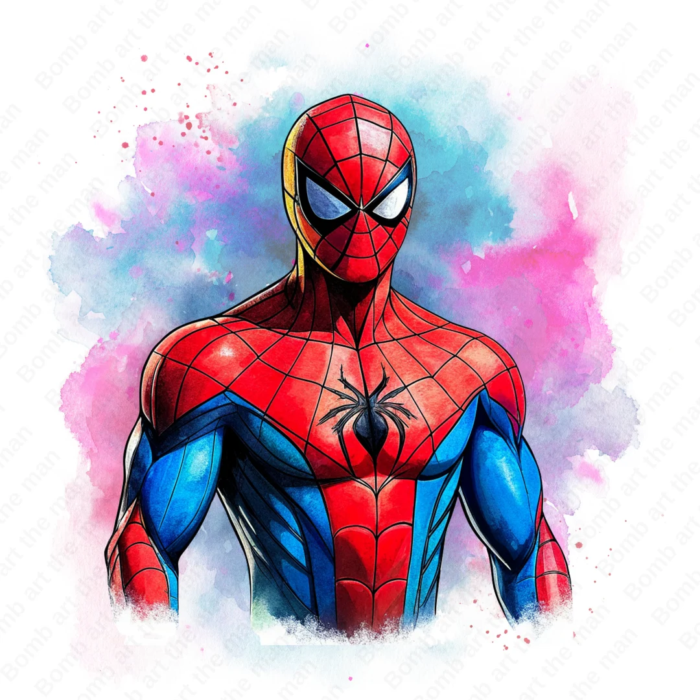

Spider-Man to jeden z najbardziej znanych superbohaterów, który chroni mieszkańców Nowego Jorku przed przestępcami. Jego prawdziwe imię to Peter Parker – młody, inteligentny i odważny chłopak, który po ugryzieniu przez radioaktywnego pająka zyskał niezwykłe moce.
Potrafi wspinać się po ścianach, jest bardzo zwinny i silny, a dzięki specjalnym wyrzutniom tworzy sieci. Peter jest również odpowiedzialny, pomocny i gotowy poświęcić się dla innych.
W swoim życiu przeżył wiele trudnych wydarzeń, między innymi śmierć swojego wujka Bena, która nauczyła go, że „z wielką mocą wiąże się wielka odpowiedzialność”. Od tego czasu Peter wykorzystuje swoje zdolności, aby walczyć ze złem i pomagać potrzebującym.

